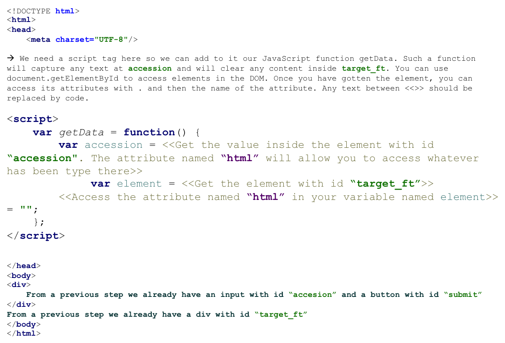
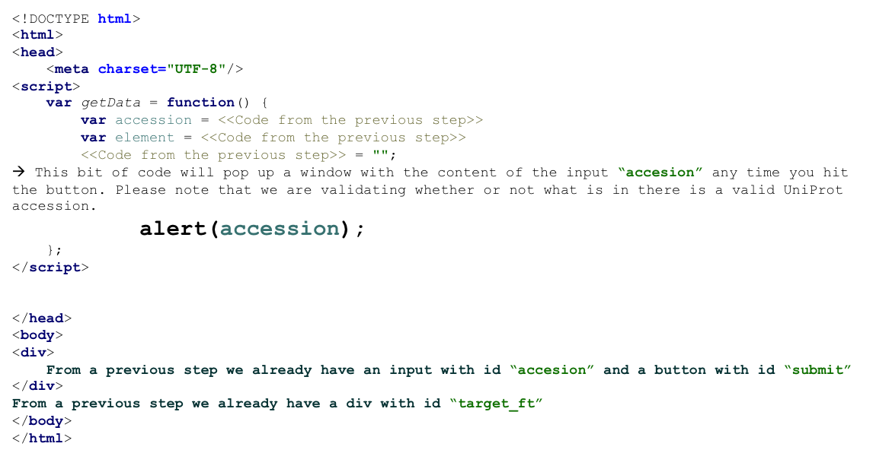
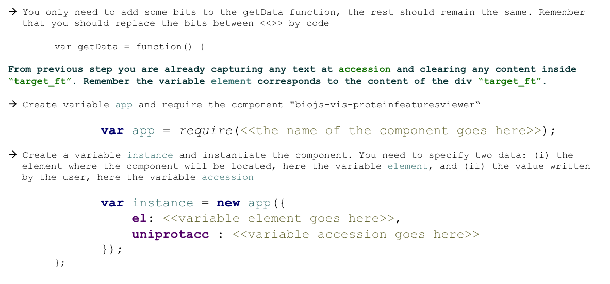

BioJS |
How to use a BioJS Component?
Protein Features Viewer
Protein Feature Viewer
The Feature viewer presents sequence feature tracks under a ruler that represents sequence length for the selected protein.
 Click here for more info
Click here for more info
What do we want to achieve?
Your own web page using the UniProt Feature Viewer!
See the Pen Feature Viewer by Jose Villaveces (@secevalliv) on CodePen.
Step 1: Empty page
We need a page ready to display protein features
- Open any simple text editor
- Name the file myPage.html
Step 2: Empty page
In order to get the protein data, we need to enable users to let us know which protein accession they want to use
- First we will create an element for users to write down a protein accession
Step 3: Capturing the input data
In order to get the protein data, we need to enable users to let us know which protein accession they want to use
Step 4: Capturing the input data
Let’s see if we are indeed capturing what the user has written down in our input element
Step 5: Make sure so far is working!
- You can safely remove the alert now to avoid visual noise
- Include ProteinFeaturesViewer JavaScript and CSSs
Step 6: Instantiate the ProteinFeaturesViewer component
The component working
See the Pen Feature Viewer by Jose Villaveces (@secevalliv) on CodePen.